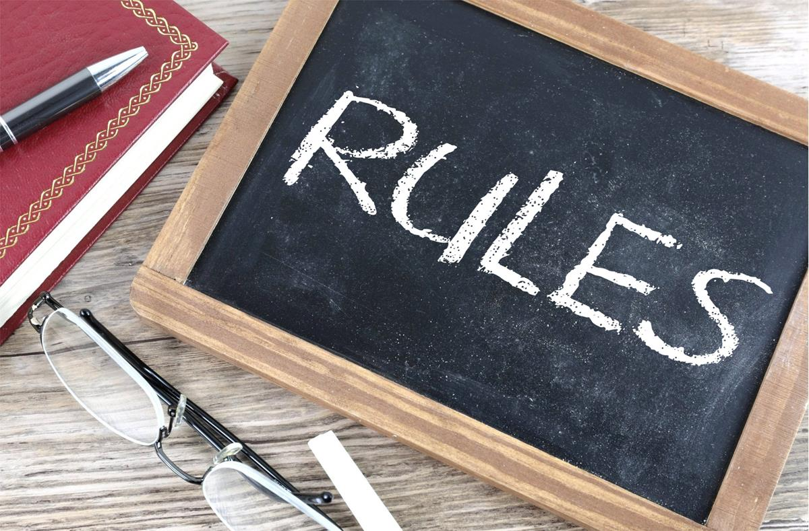

O maior esporte da história
O futebol, também referido como futebol de campo, futebol de onze e, controversamente, futebol associado (em inglês: association football, football, soccer), é um desporto de equipe jogado entre dois times de 11 jogadores cada um e um árbitro que se ocupa da correta aplicação das normas. É considerado o desporto mais popular do mundo, pois cerca de 270 milhões de pessoas participam das suas várias competições. É jogado num campo retangular gramado, com uma baliza em cada lado do campo. O objetivo do jogo é deslocar uma bola através do campo para colocá-la dentro da baliza adversária, ação que se denomina golo (português europeu) ou gol (português brasileiro). A equipe que marca mais gols ao término da partida é a vencedora.
Texto retirado de: https://pt.wikipedia.org/wiki/Futebol

Regras

- O comprimento máximo do campo deverá ser de 200 jardas (180 metros) e a largura máxima deverá ser de 100 jardas (90 metros); o comprimento e a largura deverão ser separados com bandeiras, e o gol deverá ser delimitado por dois postes verticais distantes um do outro 8 jardas (7,32 metros) e não atravessados por nenhuma tira ou barra.
- A partida deverá iniciar com um chute de bola parada, do centro do campo, pelo time que vencer no sorteio por cara ou coroa; o time adversário não deverá aproximar-se da bola, num raio de 10 jardas (9,15 metros), até que o pontapé inicial seja dado. Após a marcação de um gol, a equipe perdedora terá direito a dar o pontapé inicial.
- Os dois times deverão trocar de balizas, depois que cada gol for marcado.
- Um gol será conquistado quando a bola atravessar o espaço entre os postes do gol (a qualquer altura), sem ser arremessada, socada ou carregada com as mãos.
- Quando a bola estiver fora de campo, o jogador que reiniciar a partida deverá fazê-lo, chutando ou arremessando a bola, desde o ponto da linha lateral em que deixou o terreno de jogo, numa direção tal que forme um ângulo reto com a linha lateral.
- Um jogador estará impedido quando se colocar à frente da linha da bola. E deverá retornar após a bola, o mais rápido possível. Se a bola for chutada do seu próprio lado, passada por um jogador, ele não deverá tocá-la, nem avançar, até que um jogador do lado adversário a tenha chutado primeiramente, ou um jogador do seu próprio lado posicionado a sua frente ou no seu mesmo nível, tenha condições de chutá-la.
- Caso a bola vá para trás da linha de fundo, se um jogador ao qual o gol pertence tocar a bola primeiramente, um jogador do seu lado terá direito a dar um tiro livre, da linha de fundo do ponto oposto onde a bola deverá ser tocada. Se um jogador adversário tocar a bola primeiramente, um jogador do seu lado terá direito a dar um tiro livre, de um ponto situado a 15 jardas (aproximadamente 14 metros) fora da linha de fundo, oposto ao local onde a bola é tocada.
- Se um jogador fizer um fair catch, terá direito a um tiro livre, caso o solicite, fazendo um sinal com o calcanhar, imediatamente; e, para dar tal tiro, poderá avançar além de sua marca, até que tenha chutado.
- Um jogador terá permissão de correr com a bola, em direção ao gol adversário, se fizer um fair catch, ou dominar a bola no primeiro limite do campo; todavia, em caso de fair catch, se ele fizer um sinal, então não deverão correr.
- Se um jogador correr com a bola, em direção ao gol do adversário, qualquer outro jogador do lado adversário terá permissão de atacá-lo, segurá-lo, passar uma rasteira, dar uma canelada ou tirar a bola dele; entretanto, nenhum jogador deverá ser detido e levar canelada ao mesmo tempo.
- Nem rasteira nem canelada serão permitidas, e nenhum jogador deverá utilizar as mãos ou os cotovelos para segurar ou empurrar o adversário, exceto nos casos prescritos pela Lei nº 10.
- Qualquer jogador poderá chargear (jogo de corpo) um outro, desde que ambos estejam em active play. Um jogador poderá chargear mesmo que esteja impedido.
- Um jogador terá permissão de arremessar a bola ou passá-la para outro, se fizer um fair catch ou dominar a bola no primeiro limite de campo.
- Nenhum jogador terá direito a usar pregos, placas e ferro ou gutas-perchas, nas solas ou nos saltos de suas chuteiras.
Texto retirado de: https://pt.wikipedia.org/wiki/Regras_do_futebol
Brasileirão (Campeonato Brasileiro de Futebol)

A Série A do Campeonato Brasileiro de Futebol é com certeza uma das competições mais disputadas do planeta, todo ano o time que será campeão é uma grande incógnita. Ao todo, o campeonato já teve 63 edições, tendo em vista que a primeira ocorreu no ano de 1969.
Times
Em cada edição, temos 20 times disputando a Série A do campeonato, sendo que os 4 últimos colocados são rebaixados para a Série B (Segunda Divisão), enquanto os 4 primeiros colocados da Série B sobem para a Série A (Primeira Divisão).
Atualmente (2022), esses são os 20 times que fazem parte do campeonato:
- Santos
- Atlético-MG
- Corinthians
- Cuiabá
- Internacional
- Avaí
- Bragantino
- Palmeiras
- Flamengo
- Coritiba
- São Paulo
- Botafogo
- Fluminense
- América-MG
- Ceará
- Athletico-PR
- Atlético-GO
- Goiás
- Juventude
- Fortaleza
Os 5 clubes com mais títulos na competição:
- -->Palmeiras
- -10 títulos

- -->Santos
- -8 títulos

- -->Flamengo
- -8 títulos

- -->Corinthians
- -7 títulos

- -->São Paulo
- -6 títulos

Copa do Mundo

A Copa do Mundo é a competição de futebol mais importante do planeta, trata-se de um torneio organizado pela FIFA em que as seleções dos países realizam confrontos diretos entre si para decidir o grande campeão. A competição ocorre de 4 em 4 anos em um determinado país sede, que é escolhido pela FIFA. As seleções só podem contar com jogadores de seus países, porém não necessariamente o jogador precisa estar atuando em um clube de seu país.
Certamente conquistar uma Copa do Mundo é um grande feito para o país e é algo que ficará marcado na história. Muitas seleções conquistaram o título em questão mais de uma vez, o que é algo muito impressionante, tendo em vista que ao todo o torneio teve apenas 21 edições.
As 5 seleções com mais títulos na competição:
- -->Brasil
- -5 títulos

- -->Alemanha
- -4 títulos

- -->Itália
- -4 títulos

- -->Argentina
- -2 títulos

- -->Uruguai
- -2 títulos